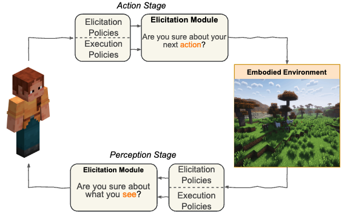
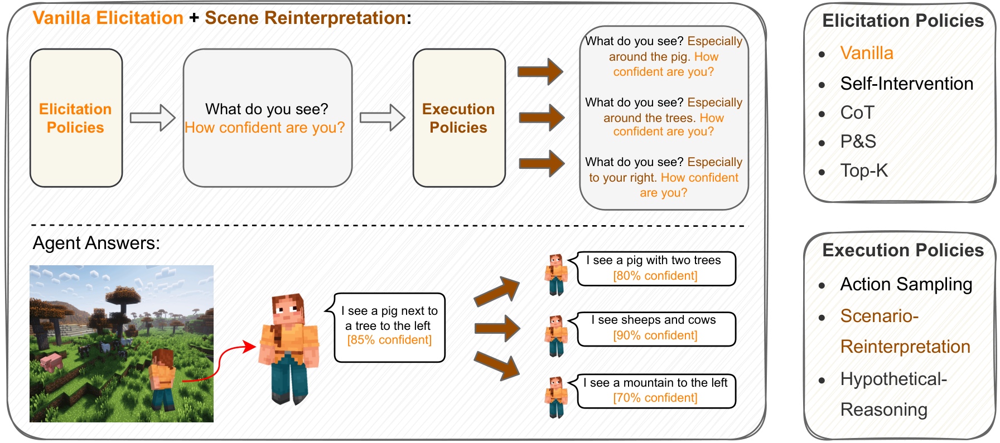

- We investigate open-world embodied confidence elicitation. We study language- and vision-language-powered agents in settings where uncertainty arises from perception and decision making, while the agents lack direct access to their internal reasoning processes.
- Elicitation and execution policies address distinct forms of uncertainty. We introduce Elicitation Policies for inductive, deductive, and abductive uncertainty, together with Execution Policies for scenario reinterpretation, action sampling, and hypothetical reasoning. These policies let agents express and refine confidence through structured reasoning and interaction with the environment.
- Minecraft experiments evaluate calibration and failure prediction. Structured reasoning approaches, including Chain-of-Thought, improve confidence calibration. The evaluation also identifies persistent difficulty distinguishing uncertainty under abductive settings, highlighting the need for more capable embodied confidence elicitation methods.
Uncertainty in ActionConfidence Elicitation in Embodied Agents
TL;DR
We study how embodied agents assess uncertainty in what they see and the actions they plan to take. Our framework elicits confidence through structured reasoning and alternative interpretations, evaluating how well elicited confidence predicts success and failure in Minecraft tasks.

Confidence at perception and action stages
The agent assesses what it sees and the action it plans to take.
Uncertainty in Action studies how embodied agents express confidence when their internal reasoning is inaccessible. The framework combines two policy types:
Elicitation policies
Structure how the agent reasons about uncertainty, from direct confidence prompts to inductive, deductive, and abductive reasoning.
Execution policies
Expand the assessment through scenario reinterpretation, action sampling, and hypothetical reasoning.
Abstract
Expressing confidence is crucial for embodied agents as they navigate dynamic, multimodal environments where uncertainty arises from both perception and decision-making processes. To the best of our knowledge, this is the first work investigating open-world embodied confidence elicitation focusing on settings where agents, powered by large language models and vision-language models, lack direct access to their internal reasoning processes. We introduce Elicitation Policies designed to address inductive, deductive, and abductive uncertainties, along with Execution Policies for scenario reinterpretation, action sampling, and hypothetical reasoning. Evaluating agents on calibration and failure prediction tasks in the Minecraft environment, we show that structured reasoning approaches, such as Chain-of-Thoughts, improve confidence calibration performance. However, our findings also reveal persistent challenges in distinguishing uncertainty, particularly under abductive settings, highlighting the need for more sophisticated embodied confidence elicitation methods.
Contributions
Embodied Confidence Elicitation Method
Our proposed Confidence Estimation Framework introduces a structured approach to assessing and expressing an agent’s confidence through Elicitation Policies and Execution Policies. Operating at both perception and action stages, Elicitation Modules prompt the agent to evaluate uncertainty in its observations and decisions. Execution Policies further refine confidence calibration by expanding the agent’s reasoning space, enabling more robust and context-aware decision-making.

Embodied Confidence Elicitation. Elicitation Policies enable agents to express uncertainty, while Execution Policies refine and expand confidence assessment through scenario reinterpretation, action sampling, and hypothetical reasoning. Together, they enhance confidence calibration in embodied agents. The orange text represents the vanilla elicitation policy, which incorporates the vanilla confidence prompt into the original instruction. The brown arrows denote the Scenario-Reinterpretation execution policy, prompting the agent to generate additional scene insights.
Quantitative Results
Confidence elicitation
Calibration asks whether stated confidence matches observed success. Failure prediction asks whether confidence distinguishes successful from unsuccessful outcomes. These are different goals: a policy can improve one more than the other.
Confidence Metrics Across Elicitation Policies with three models (GPT-4V, MineLLM, and LLaMA-based STEVE) using different elicitation strategies: Vanilla (basic task understanding), Self-Intervention (reflection on own actions), Chain-of-Thought (step-by-step reasoning), Plan & Solve (explicit planning before execution), and Top-K (confidence distribution across multiple outputs) with No Execution Policies applied. The best performance across each model is in bold, and second best is underlined.
| Model | Vanilla | Self-Intervention | CoT (Inductive) | P&S (Deductive) | Top-K (Abductive) |
|---|---|---|---|---|---|
| ECE ↓ | |||||
| GPT-4V | 0.27 | 0.21 | 0.16 | 0.15 | 0.17 |
| MineLLM | 0.49 | 0.41 | 0.34 | 0.39 | 0.43 |
| STEVE | 0.43 | 0.32 | 0.26 | 0.26 | 0.35 |
| AUROC ↑ | |||||
| GPT-4V | 0.69 | 0.76 | 0.83 | 0.82 | 0.73 |
| MineLLM | 0.53 | 0.59 | 0.64 | 0.61 | 0.58 |
| STEVE | 0.58 | 0.69 | 0.72 | 0.67 | 0.68 |
| PR-P ↑ | |||||
| GPT-4V | 0.66 | 0.76 | 0.81 | 0.79 | 0.70 |
| MineLLM | 0.51 | 0.59 | 0.63 | 0.60 | 0.57 |
| STEVE | 0.56 | 0.67 | 0.69 | 0.66 | 0.64 |
| PR-N ↑ | |||||
| GPT-4V | 0.52 | 0.53 | 0.58 | 0.55 | 0.53 |
| MineLLM | 0.39 | 0.42 | 0.42 | 0.43 | 0.40 |
| STEVE | 0.41 | 0.46 | 0.46 | 0.43 | 0.42 |
Execution policies and confidence estimation
Select an agent to compare confidence calibration and failure prediction across action sampling, scenario reinterpretation, and hypothetical reasoning.
VanillaSelf-InterventionCoTP&STop-KVanilla, no execution policy
Scroll horizontally to compare all execution policies.
ECE ↓
AUROC ↑
ECE ↓
AUROC ↑
ECE ↓
AUROC ↑
ECE ↓
AUROC ↑
BibTeX
@article{yu2025uncertaintyactionconfidenceelicitation,
title={Uncertainty in Action: Confidence Elicitation in Embodied Agents},
author={Tianjiao Yu and Vedant Shah and Muntasir Wahed and Kiet A. Nguyen and Adheesh Juvekar and Tal August and Ismini Lourentzou},
journal={arXiv preprint arXiv:2503.10628},
year={2025}
}Template acknowledgements
This site is built upon the work of Nerfies, made available under the Creative Commons Attribution-ShareAlike 4.0 International License. We gratefully acknowledge Minedojo, Voyager, and MP5 for open-sourcing their projects.